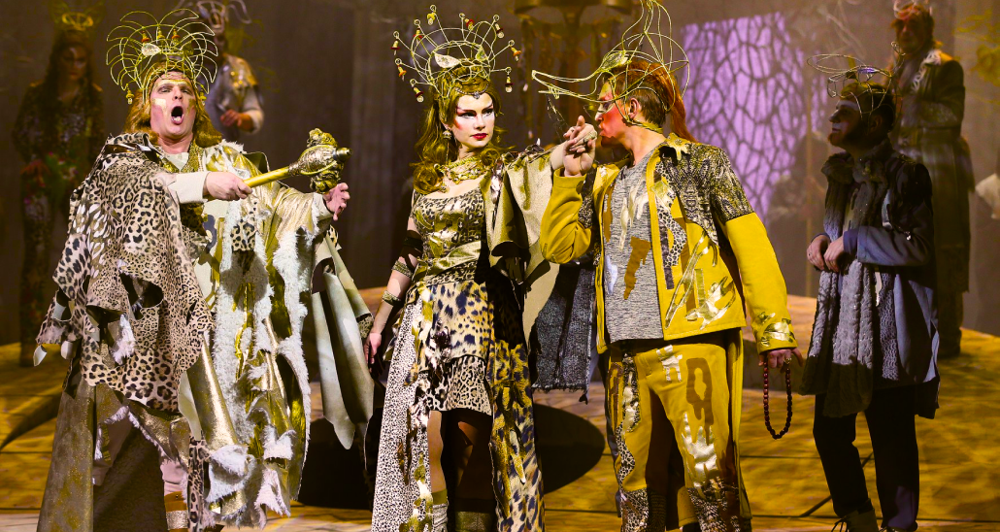

Усе своє свідоме життя я крокую поруч із співом. Усі мої думки, дії та справи пов’язані з прекрасним мистецтвом вокалу.
Осягнула диригентське мистецтво в училищі. Навчалася в Музичній Академії ім. М. Лисенка, на вокальному факультеті.
Далі, занурилась з головою у вивчення та вдосконалення цього прекрасного мистецтва. Освоювала нові техніки та твори, жанри та стилі виконання. Концерти, конкурси, майстер-класи.
В 24 роки я стала солісткою опери Львівського Національного театру опери та балету ім. С. Крушельницької. Це була мрія , і я її досягла!

Я продовжую вдосконалюватись, вивчати нове та незвідане у вокальному мистецтві.
Приймаю участь у виставах, концертах, міжнародних конкурсах та фестивалях. Набираюсь досвіду у відомих світових співаків, відвідуючи майстер класи по всьому світу.
Підтримкою в розвитку мого професіоналізму є і особисті якості: наполегливість і вміння рухатися вперед, незважаючи ні на що.
Я безупинно обробляю нову інформацію і продумую мистецькі схеми, щоб зробити наш з вами творчий розвиток більш досконалим та доступнішим.
На сьогодні маю більш ніж 20 років практики роботи на сцені, більше 8 років викладаю вокал та даю вокальні майстер-класи для усіх бажаючих.
Хочу ділитись зі світом своїм досвідом та навиками у роботі зі співом. Упевнена, ми з вами знайдемо спільні теми для розмови і зможемо насолоджуватися творчістю.
СТУДІЯ
Програма уроків з вокалу Квадратного Мандарину поєднює технічний та творчий розвиток з безперервним досвідом живого виконання.
Унікальне творче середовище дозволить вам розширити межі свого вокального інструменту, створюючи та досліджуючи свою власну індивідуальність.